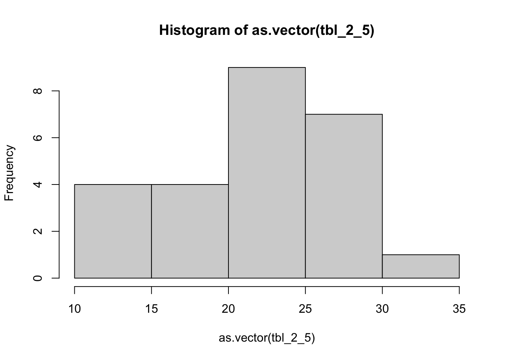

Lecture 3
Practical Significance of Standard Deviation
2.3 Understanding and Interpreting the Standard Deviation
Tchebysheff’s Theorem
Given a number k greater than or equal to 1 and a set of n measurements, at least \(1 - \frac{1}{k^2}\) of the measurements will lie within k standard deviations of their mean.
k = 1: 0% of measurments
k = 2: 3/4 of measurements
k = 3: 8/9 of measurements
Interval is computed with \(\mu \pm k\sigma\).
Dotted lines show interval for k = 2
Actual amount of data contained in data
[1] 0.954Note that it’s much more than the expected 75%
Given \(\bar{x} = 75, s^2 - 100\), create intervals using Tchebysheff’s theorem using k = 1.5, 2, 3
What value of k gives us an interval that contains at least 50% of the measurements.
Emperical Rule
Another rule works better when data is ‘mount shaped’.
\(\mu \pm \sigma\) has about 68 % of measurements
\(\mu \pm 2\sigma\) has about 95 % of measurements
\(\mu \pm 3\sigma\) has about 99.7 % of measurements.
We will learn more about where these numbers come from when we learn about the normal distribution.


Using the empirical rule how much of the daa is contained in \(\mu \pm \sigma\)?
First histogram:
[1] 0.679Second histogram:
[1] 0.609351Example 2.8
| 26.1 | 26.0 | 14.5 | 29.3 | 19.7 |
| 22.1 | 21.2 | 26.6 | 31.9 | 25.0 |
| 15.9 | 20.8 | 20.2 | 17.8 | 13.3 |
| 25.6 | 26.5 | 15.7 | 22.1 | 13.8 |
| 29.0 | 21.3 | 23.5 | 22.1 | 10.2 |
Sample mean:
[1] 21.6standard deviation
[1] 5.5
show 1, 2 and 3 intervals of sd from mean and figure out how many datapoints fall in those buckets
| k | intervals | freq | rel_freq |
|---|---|---|---|
| 1 | 16.1, 27.1 | 16 | 0.64 |
| 2 | 10.6, 32.6 | 24 | 0.96 |
| 3 | 5.1, 38.1 | 25 | 1.00 |
Calculate Tchebysheff’s Interval Calculate Empirical Rule Intervals as well
Approximing s using the range
- Most measurments are within two standard deviations of the mean.
- approximate s as range/4
Range for tbl_2_5
[1] 10.2 31.9[1] 21.7Std using range approximation
[1] 5.425Actual Std
[1] 6